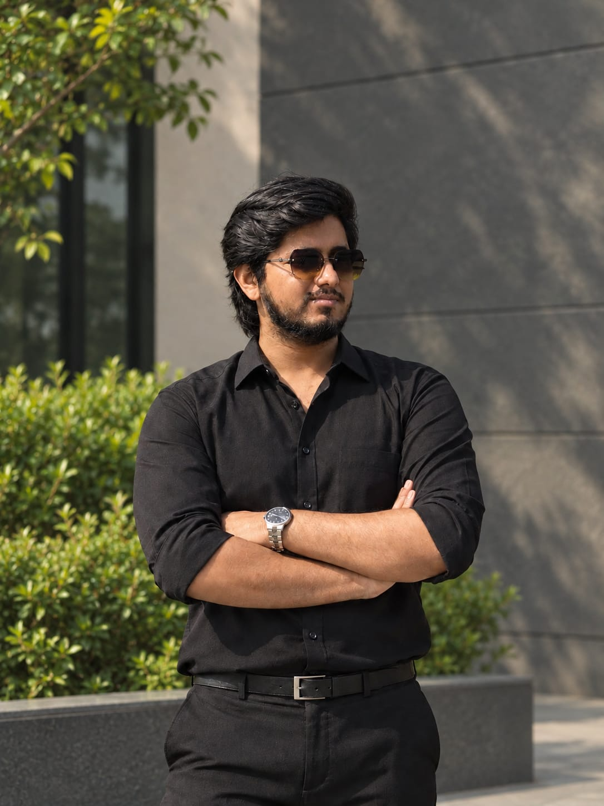

Ismam Nur Swapnil
Machine Learning Engineer, Advanced Chemical Industries Limited · BUET EEE Graduate
I am a Machine Learning Engineer in the Department of MIS at Advanced Chemical Industries Limited, where I work on Bangla OCR and text-to-speech. I completed my B.Sc. in Electrical and Electronic Engineering at the Bangladesh University of Engineering and Technology in 2025. My undergraduate research focused on dermatological vision-language models, supervised by Prof. Mohammad Ariful Haque.
My research focuses on efficient policy optimization and on-policy self-distillation for language-model reasoning. I collaborate with Prof. Ser-Nam Lim at the University of Central Florida on PrePO, and with Md Mofijul Islam of Amazon GenAI on OPASD. I’m exploring PhD opportunities in reinforcement learning and multimodal reasoning.
Interests
- Reinforcement learning: efficient policy optimization for reasoning
- On-policy distillation: learning from token and attention signals
- Multimodal learning: vision-language models and medical AI
- Ongoing interests: world models, sampling, and inference-time scaling
Education
- Bangladesh University of Engineering and Technology
B.Sc. in Electrical and Electronic Engineering
Feb 2020 – Feb 2025 · CGPA: 3.73/4.0
Contact
For more details, see my publications, research, and experience pages.